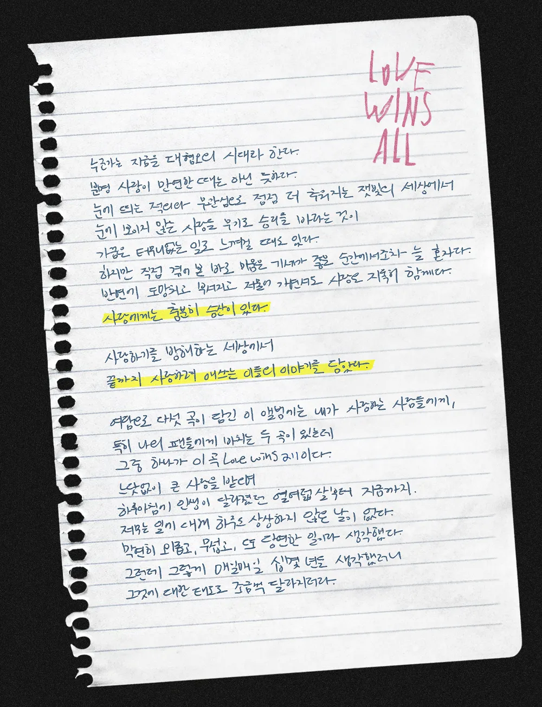
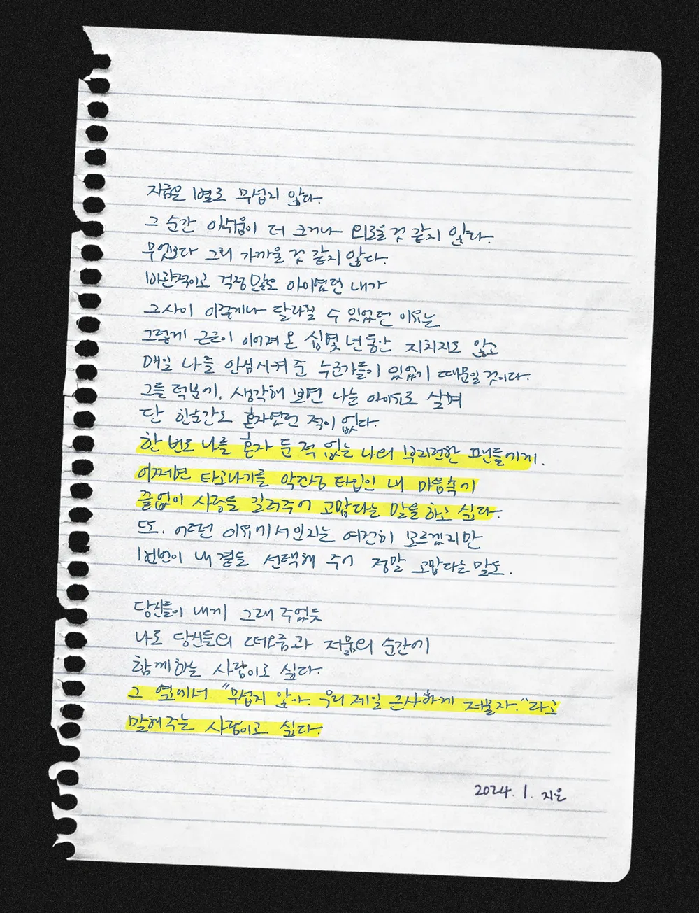
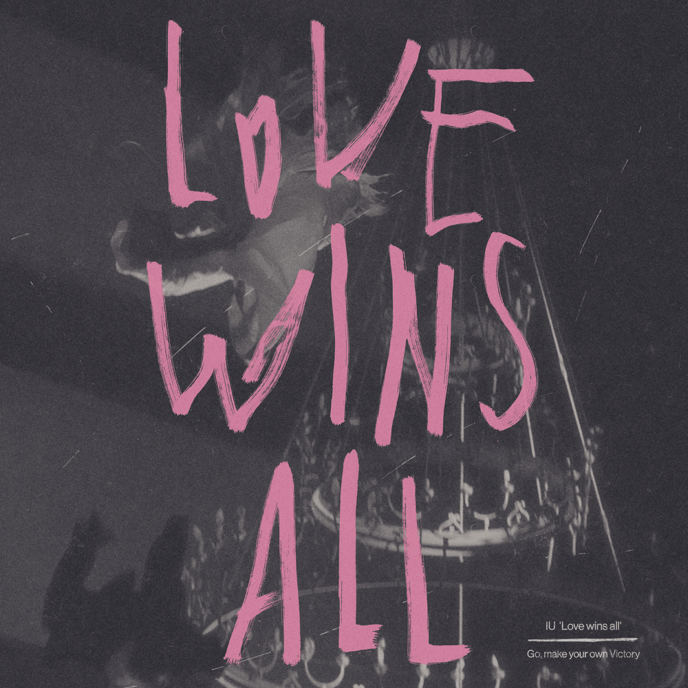
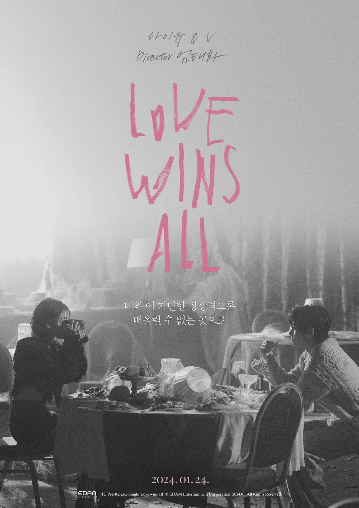

안녕하세요 라보엠입니다.
아이유의 신곡이 나왔습니다. Love wins all 사랑이 모든 것을 이긴다는 제목에 많은 의미가 담겨있는듯합니다. 저는 개인적으로 이런 엔딩이나 마침표 같은 아이유의 발라드를 더 좋아하지만 아이유의 이번 곡 같은 에너지가 담긴 노래도 좋아합니다. 아직 아이유 콘서트에는 가보지 못했는데, 콘서트에서 들으면 더 좋을 것 같은 느낌입니다. 언젠가 콘서트에 한 번 갈 수 있겠죠? 발매전 이미 콘서트에서 불렀더라구요. 콘서트에서 먼저 들으신 분들 부럽다요.
아이유 IU Love wins all MV
Love wins all 의 뮤직비디오에는 아이유와 함께 BTS 방탄의 뷔가 출연했으며, 영화 콘크리트 유토피아를 연출한 엄태화 감독이 연출하여, 디스토피아의 모습을 뮤비에 그려냈습니다. 이번 뮤비에서는 둘이 함께 무언가에 쫓기기다가 도착한 곳에서 발견한 캠코더로 서로의 아름답고 행복한 모습을 만끽하며 웨딩드레스를 입고 셀프촬영도 하지만, 결국 무언가가 다시 쫓아와 도망가다가 저항하며 둘이 결국 사라지며 이야기가 끝납니다. 보는 이마다 해석이 다를 수 있을텐데, 해석은 각자의 몫으로 남겨두겠습니다.
아이유 IU Love wins all Releas Note
 
누군가는 지금을 대혐오의 시대라 한다.
분명 사랑이 만연한 때는 아닌 듯하다.
눈에 띄는 적의와 무관심으로 점점 더 추워지는 잿빛의 세상에서,
눈에 보이지 않는 사랑을 무기로 승리를 바라는 것이
가끔은 터무니없는 일로 느껴질 때도 있다.
하지만 직접 겪어본 바로 미움은 기세가 좋은 순간에서조차 늘 혼자다.
반면에 도망치고 부서지고 저물어가면서도 사랑은 지독히 함께다.
사랑에게는 충분히 승산이 있다.
사랑하기를 방해하는 세상에서
끝까지 사랑하려 애쓰는 이들의 이야기를 담았다.
여담으로 다섯 곡이 담긴 이 앨범에는 내가 사랑하는 사람들에게,
특히 나의 팬들에게 바치는 두 곡이 있는데
그 중 하나가 이 곡 Love wins all이다.
느닷없이 큰 사랑을 받으으며
하루 아침에 인생이 달라졌던 열여덟 살부터 지금까지.
저무는 일에 대해 하루도 상상하지 않은 날이 없다.
막연히 외롭고, 무섭고, 또 당연한 일이라 생각했다.
그런데 그렇게 매일매일 십몇 년을 생각했더니
그것에 대한 태도도 조금씩 달라지더라.
지금은 별로 무섭지 않다.
그 순간 아쉬움이 더 크거나 외로울 것 같지 않다.
무엇보다 그리 가까울 것 같지 않다.
비관적이고 걱정 많은 아이였던 내가
그 사이 이렇게나 달라질 수 있었던 이유는
그렇게 근근이 이어져 온 십 몇 년 동안 지치지도 않고
매일 나를 안심시켜 준 누군가들이 있었기 때문일 것이다.
그들 덕분에, 생각해 보면 나는 아이유로 살며
단 한순간도 혼자였던 적이 없다.
한 번도 나를 혼자 둔 적 없는 나의 부지런한 팬들에게.
어쩌면 타고나기를 악건성 타입인 내 마음속에
끝없이 사랑을 길러주어 고맙다는 말을 하고 싶다.
또, 어떤 이유에서인지는 여전히 모르겠지만
번번이 내 곁을 선택해 주어 정말 고맙다는 말도.
당신들이 내게 그래주었듯
나도 당신들의 떠오름과 저묾의 순간에
함께하는 사람이고 싶다.
그 옆에서 “무섭지 않아. 우리 제일 근사하게 저물자.”라고
말해주는 사람이고 싶다.
2024. 1. 지은
손글씨로 직접 적은 발매노트가 정말 마음에 와닿았습니다.
아이유 IU Love wins all 가사
1.
Dearest, Darling, My universe 날 데려가 줄래?
나의 이 가난한 상상력으론 떠올릴 수 없는 곳으로
저기 멀리 from Earth to Mars 꼭 같이 가줄래?
그곳이 어디든, 오랜 외로움 그 반대말을 찾아서
어떤 실수로
이토록 우리는 함께일까
세상에게서 도망쳐 Run on
나와 저 끝까지 가줘 My lover
나쁜 결말일까 길 잃은 우리 둘 um
부서지도록 나를 꼭 안아
더 사랑히 내게 입 맞춰 Lover
Love is all Love is all
Love Love Love Love
2.
결국, 그럼에도,
어째서 우리는 서로일까
세상에게서 도망쳐 Run on
나와 저 끝까지 가줘 My lover
나쁜 결말일까 길 잃은 우리 둘 um
br.
찬찬히 너를 두 눈에 담아
한 번 더 편안히 웃어주렴
유영하듯 떠오른 그 날 그 밤처럼,
나와 함께 겁 없이 저물어줄래?
산산히 나를 더 망쳐 Ruiner
너와 슬퍼지고 싶어 My lover
필연에게서 도망쳐 Run on
나와 저 끝까지 가줘 My lover
일부러 나란히 길 잃은 우리 두 사람
부서지도록 나를 꼭 안아
더 사랑히 내게 입 맞춰 Lover
Our Love wins all
Love wins all
LoveLove Love Love

대혐오의 시대에 사랑을 주제로 좋은 노래를 발표해 주었네요. 발표전부터 제목과 뮤비 내용에 대한 논란들이 있었는데, 아이유에 대한 관심이 많다는 증거가 아닐까 싶습니다. 그저 사랑으로 모든 논란이 종식되면 좋겠습니다.
